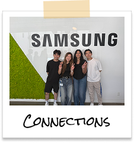
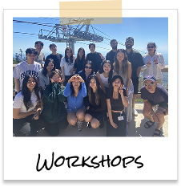
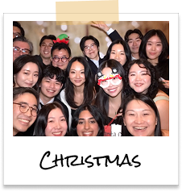
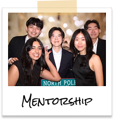
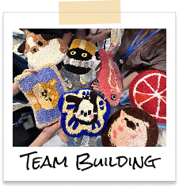

Samsung R&D Canada
During my year at Samsung, I focused on advocating for increased user testing across global Knox users while contributing to initiatives of content-first practices.
Knox Admin Portal
Samsung's Knox is a mobile security and device-management system. The Knox Admin Portal, used by the IT admin sector, is where organizations can access, configure and manage device fleets on a centralized platform.
Due to NDA, please reach out for more information about my contributions.
My contributions
Content direction for 2 releases
Collaborated with designers and project managers to align on feature requirements to deliver UX copy across products. With features being consolidated, I unified terminology across experiences to improve user comprehension of feature functionality.
Crafted 8 unmoderated user tests
Strategically designed user testing plans to ensure actionable feedback for content and design validation. Applied a variety of different testing methods including A/B testing and tree testing based on research goals or hypothesis.
Analyzed data and presented insights from 150+ participants
Synthesized findings using various analysis methods such as affinity mapping and presented recommendations to cross-functional teams as well as stakeholders
Looking back
Being the underdogs has it's advantages. Having the opportunity to work alongside a driven UX writing team showed me how to step into conversations where writers are sometimes overlooked and still make space for content to be heard. They taught me how to participate in cross-functional discussions with intention and confidently advocate for the value of consistent content across products. This experience gave me the foundational skills to speak up for users and ensure their needs stay at the center of every decision.
Why should we care? Grounding decisions in research. With the teams trust in me to conduct valuable testing, I jumped on any opportunity to validate features or learn more about the users. It became clear that incorporating testing into the process resulted in stronger, more intuitive experiences as we better understood how Knox users think and navigate products.
How the tiniest change can make a major impact. Alongside research, I learned how to translate complex security concepts into language that feels clear and guided. It was eye-opening to see how even the smallest change in wording can simplify an entire experience. Recognizing how important details are for usability made me appreciate every step of the design process even more.
Some of the most meaningful takeaways came from the connections I made with my mentors and teammates who supported my growth and cared for what I gained out of the experience. Looking back, the experience did not only teach me new skills but it expanded my sense of how empathetic user-centric thinking contributes to product success.




